04Governo de SergipeGovernment of SergipeClienteClient
Aracaju 169 anos169 years
Aracaju é feita de pessoas.
No aniversário de 169 anos, escolhemos celebrar quem realmente faz essa cidade acontecer: seu povo. A campanha homenageia as vidas que moldam a capital sergipana todos os dias. Em cada rua, em cada sorriso, em cada história contada, Aracaju se revela viva, múltipla, única.
A partir das vozes de quem vive a cidade — do ambulante ao empresário, da criança ao idoso — mostramos como a cultura, os afetos e as políticas públicas impactam o cotidiano de forma real e positiva. Porque é nas pessoas que Aracaju continua se reinventando todos os dias.
Aracaju is made of people.
For its 169th anniversary, we chose to honor what truly moves this city forward: its people. This campaign celebrates the lives that shape Aracaju day after day. In every street, every smile, every story, the city reveals itself as vibrant, diverse, and unmistakably unique.
Through the voices of those who live it — from street vendors to entrepreneurs, from childhood to old age — we captured how culture, connection, and public policy impact daily life in meaningful ways. It is through its people that Aracaju reinvents itself, every single day.
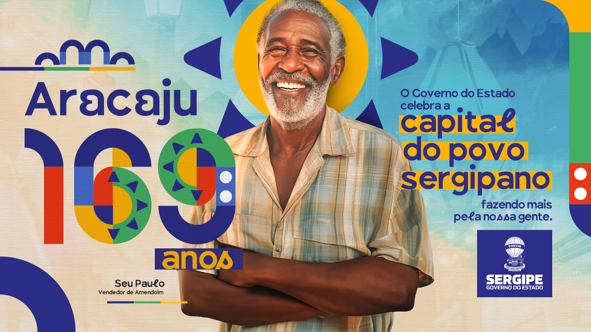
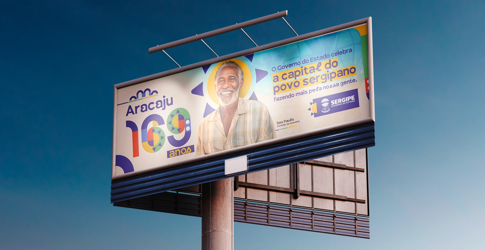
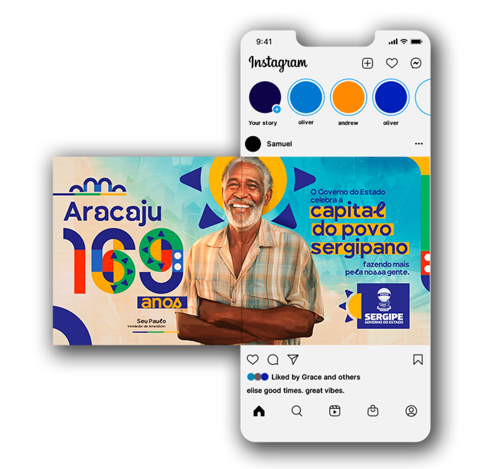
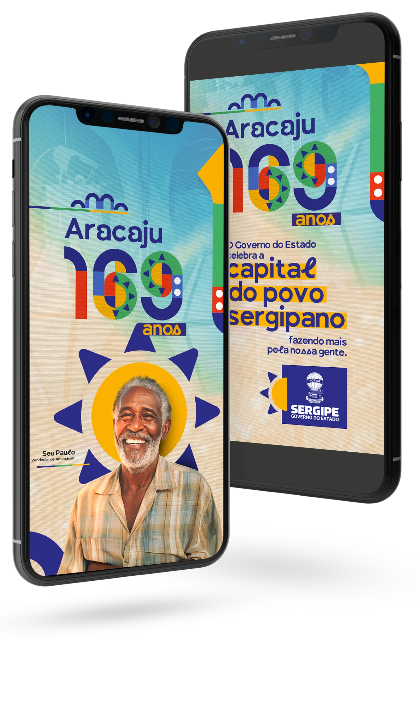
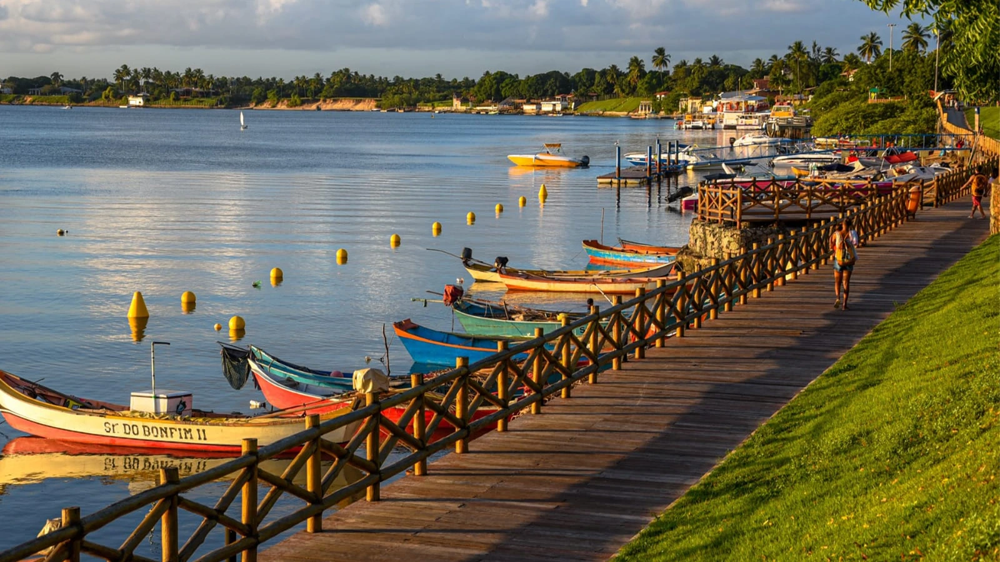
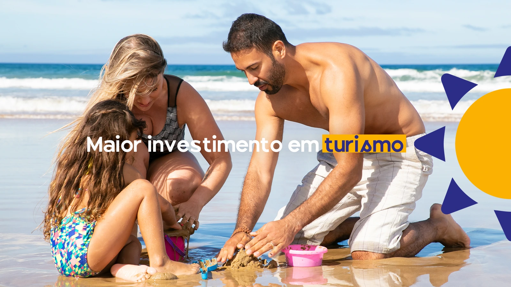
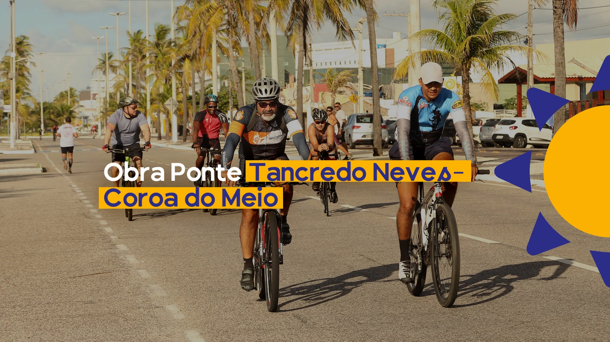
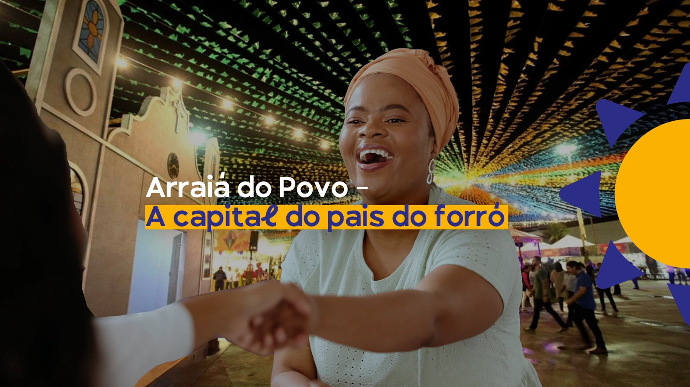
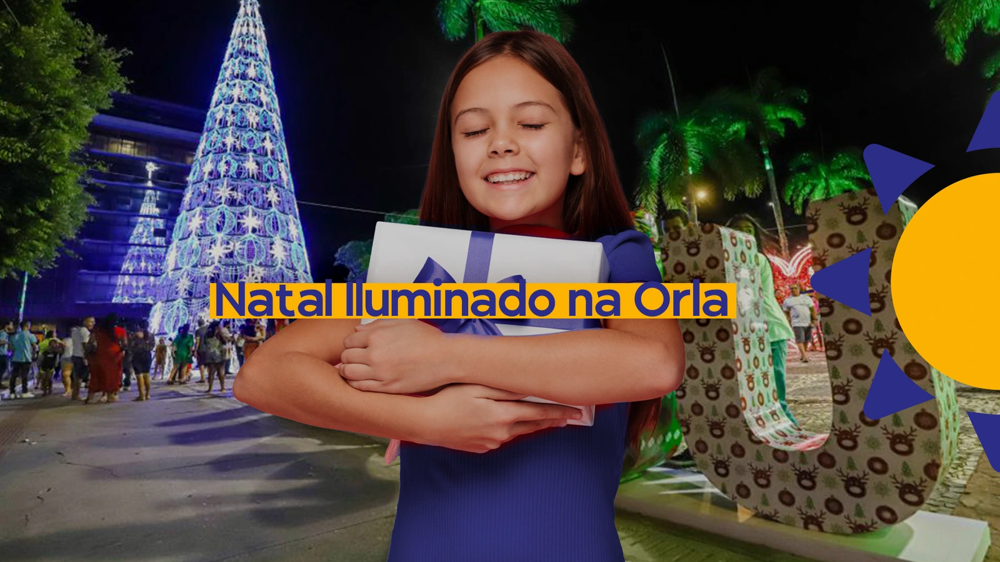
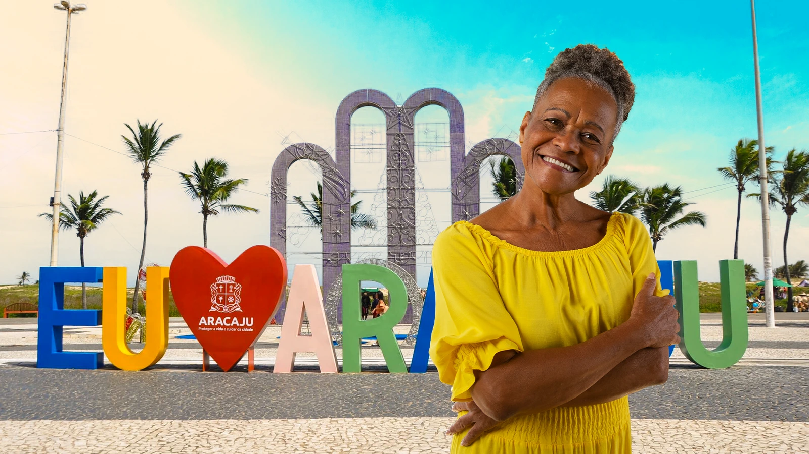
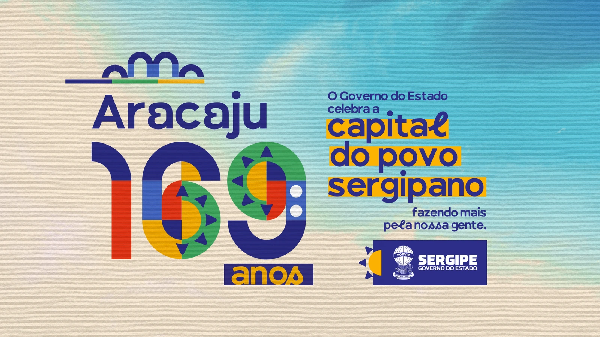
↘ Ficha técnicaCredits
- RedaçãoCopywriter
- Isaac Alexandre
- Direção de arteArt direction
- Guga Guedes
- Meu papelMy role
- Conceito & redaçãoConcept & copywriting